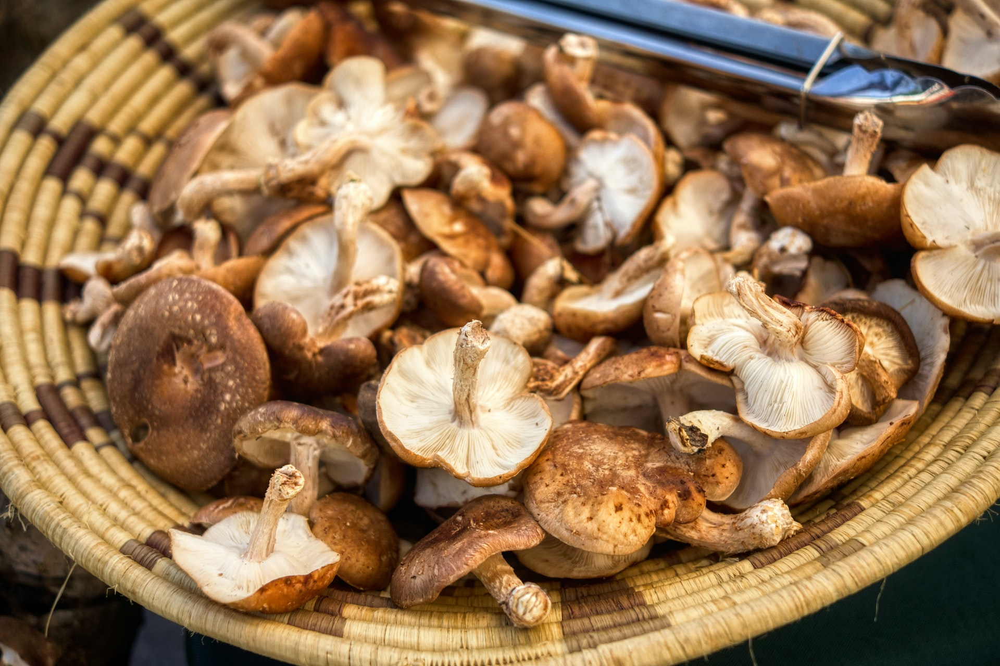

Dicas
7 dicas para ser mais saudável em 2024
 10 dicas para uma vida mais saudável
10 dicas para uma vida mais saudável
10 dicas para ajudar a melhorar sua saúde e bem-estar
6 exercícios que são odiados, mas que são ótimos para a saúde e vão te ajudar numa vida saudável
Cientistas do Google desenvolvem IA que poderá diagnosticar doenças pela tosse
Mudança de temperatura afeta a saúde: saiba os riscos e como se proteger
 Dormir bem para viver melhor. Como a qualidade do sono nos afeta
Dormir bem para viver melhor. Como a qualidade do sono nos afeta
Itens voltados ao autocuidado são chave para o bem-estar

Conheça o primeiro suplemento alimentar à base de cogumelos no Brasil